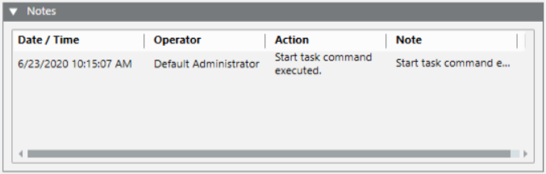

Tasks Notes and Validation
If the Operator Tasks dialog box displays, operators are prompted to enter a note and explain why starting, reverting, closing, or cancelling a task, as well as, when modifying the task due date. This comment will also be logged for further analysis.
The operator’s notes will be displayed in the Notes expander.

This expander contains a maximum of ten notes. You can view more notes in the Detailed Log tab. See View the Operator Task Notes or Details from Previous Execution.
NOTE: To see the full text of long notes, double-click the note to open it the Operator Tasks dialog box.
Validation of the Operations on the Operator Tasks
Operators might be prompted to validate their operations on the tasks. In particular, the validation comment is taken as an operator tasks note when editing, starting, closing, cancelling, or deleting tasks, as well as, when doing revert actions. If a validation comment is required, operators are not prompted to enter the typical task note.